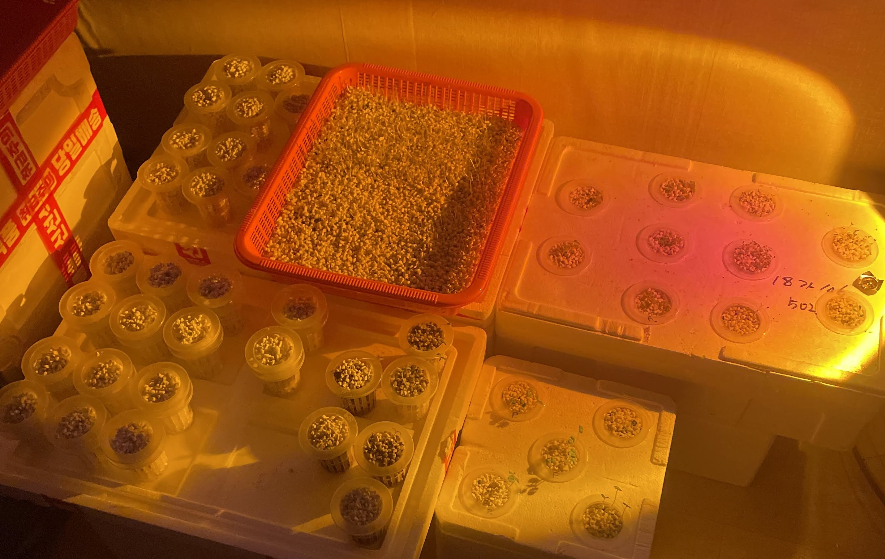
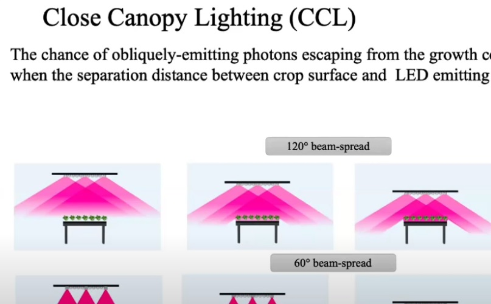
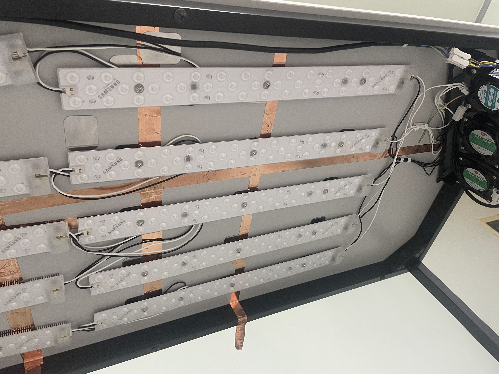
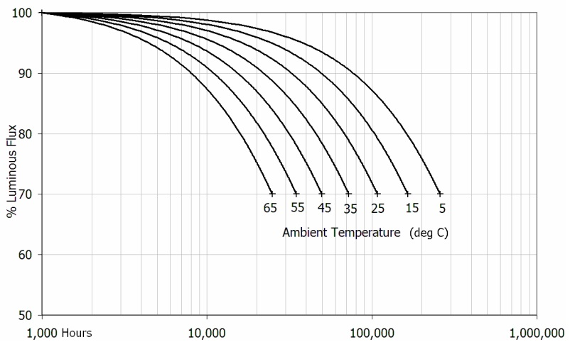
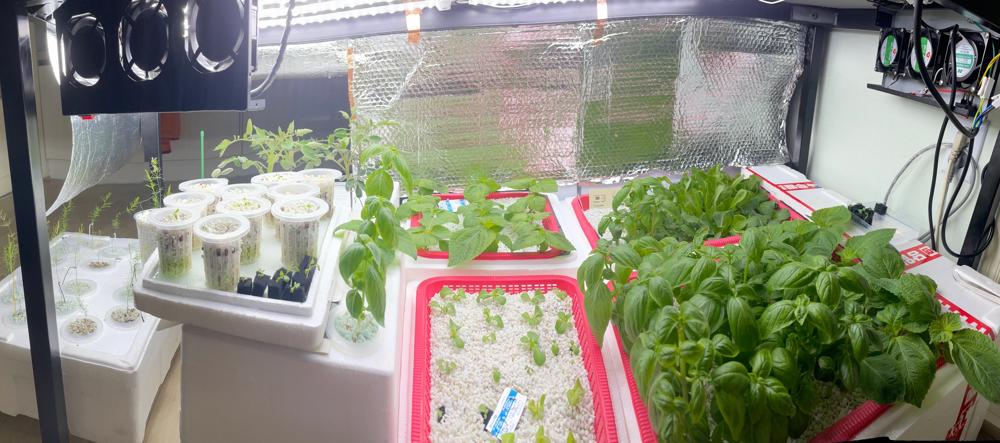
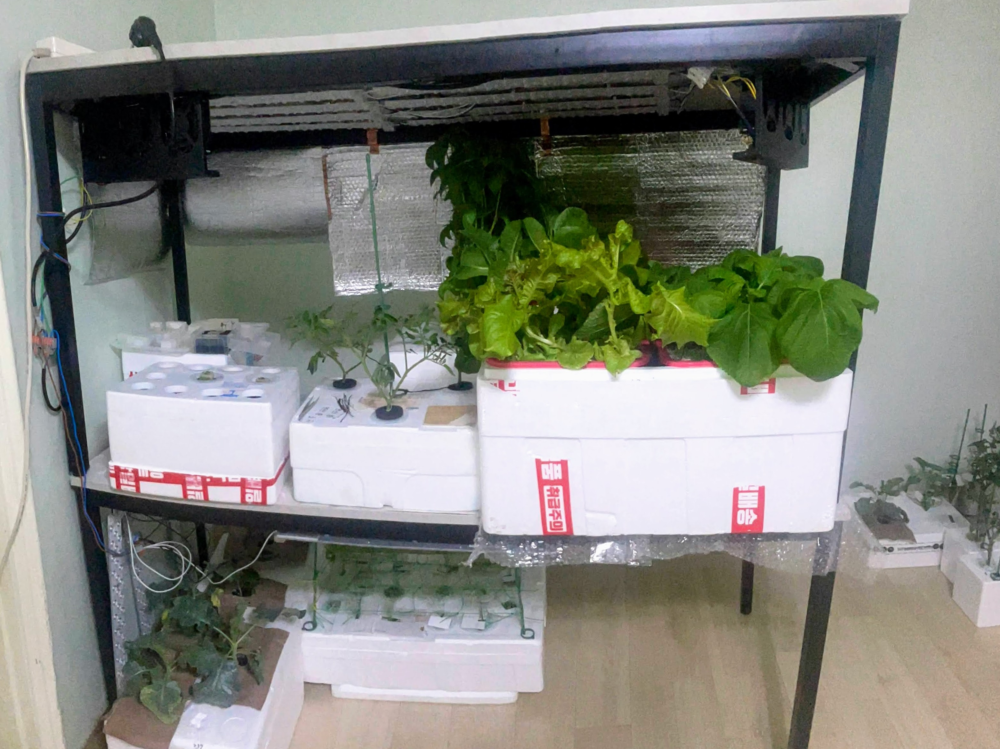
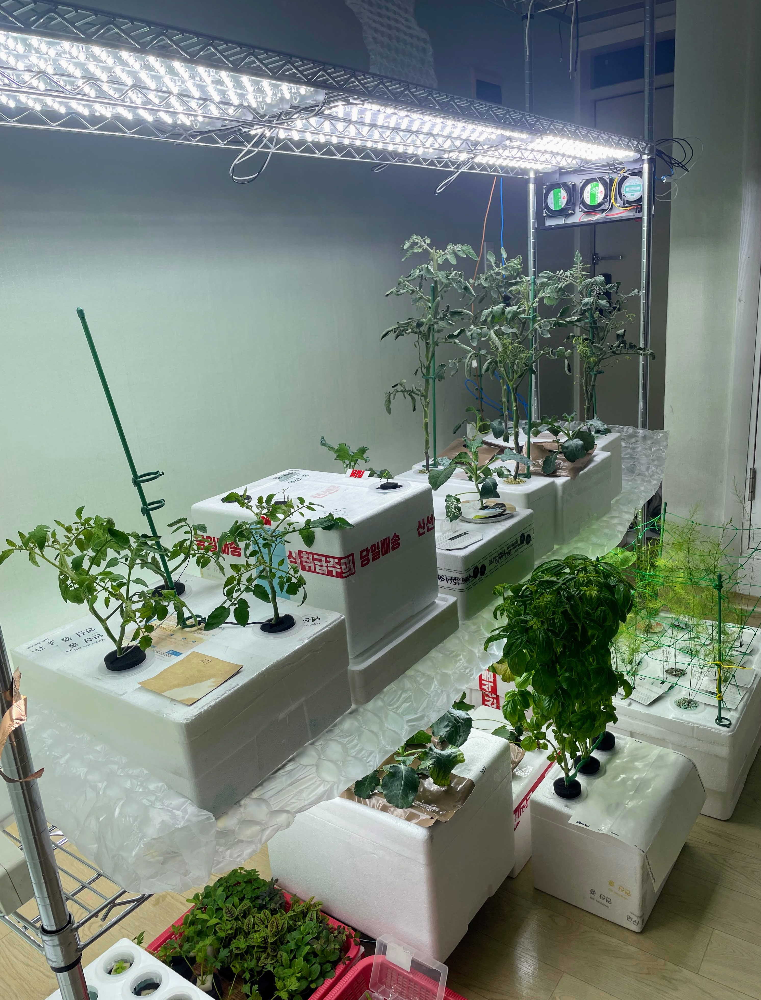

Light Source, a Shelf
Plundered from
- A Systematic Literature Review on Parameters Optimization for Smart Hydroponic Systems
- https://edman007.com/article/Plants/PAR-Lighting-Calculator
- Indoor Ag Science Cafe #66: Close-canopy lighting for vertical farms
A light source is the foremost element for indoor farming.
I thought three of 5W LED would be enough for leafy greens and cherry tomatos. Most sprouts are stretched and vanished in a night. I lose dozens of sprouts because of this. You can find this is absurd, as weak sunlight is enough to light a room but completely unsatisfying for plants. Crop plants demand a lot as sunlight is high in watt.

Two light units are used for growing plants. PPFD is an unit for effective light power for photosynthesis in a square area (m2) per second for a given distance, and similar to lux (lx, or 1lm per m2) except for a different chromaticity profile curve. DLI is a total required or received PPFD amount per day. Most crop plants demands 200 DLI or higher with few exceptions.
To use converter with proper parameters (2), you have to know a color temperature, lux or wattage, light emitting distance and fixture angle of the light source. Also you should use a wattage per meter.

Also according to the article (2, 3), a fixture (a device that limits light angle from emitting surface, in here) is also important. You may assume that the photons are wasted if the heat and light is not constrained within the compartment or floor. A reflective flim is necessory for the artificial light source.
Any light sources regardless of an underlying technology (bulbs) or spectrum is usable. I'll only talk about a LED, which is practical in any personal usages.
There're diversity of things to be considered if you're going to use a full-time artificial light source. Most homebrew conditions are cannot be measured. I suggest you to briefly assume things. Get a minimum wattage per square meter or a PPFD based on a LED wattage or lumen, and color temperature or chromaticity.
Room lamps: Room lamps are LED lights with fixture and stands. There's no room for those products. It's not able to promote planting density with these products. Some sellers saying their lamps are plant raising lamp '식물등' with a photo with PPFD being measured with free version of smartphone measurement apps, with ads in the app screen, and without a diffuser.
LED modules: This is a typical board module or strip of LED chips, and usually uses 12V DC input from an external power supply. This is also a prevalent choice for small-sized commercial farms for leafy greens with a short crop cycle.
Plant LED products: A famous product is the GE Arize horticulture lights. There's Arize copycats on a marketplace, specific to an industrial-grade farm and available to personals. Those are with a PPFD benchmark result, neat hardware, providing 50W+ output power per module from a mere AC input. The reason that I didn't used those things is a small module footprint. Power LED parts are required to have a explict thermal parts like a 5x5x1cm heatsink per 1W. A semiconductor with a smaller footprint demands a good cooler. If you're affordable for thermal solutions, those would be a choice.
Room lights: There is a LED module product for a upgrading room lights. Those are cheap and called 'LED module parts' on marketplaces. Specifications of such products are mostly 25-30W 4500-6500K output from an AC input, with a suitable footprint and a cheap price. This product is easy to attach to a steel products with a magnet.

LEDs are exceptionally weak to heat. Enterprise products comes with big heatsink even without a power supply.
LEDs are energy efficient but they're very weak to high temperature. You should take account of heat dispersion. LED products with an external power supply is heavy but relible, and the heat source can be separated. Another major factor affects to MBTF is a capacitor in a power supply, which is also sensitive to temperature.
I got a cheap fan module from an online scrap market. Those are unexceptedly usable for my case. The LED modules were hot and I can't even touch it. I suggest to use fans larger than 120mm for acceptable performance.

The heat problem shouldn't be underestimated unless you want to change the parts frequently. You won't want to use an air-con for a heat from an electric light source rather than a plant. Indoor farms are already suffering from such an inefficiency.
Shelf

A stand or shelf is a baseline hardware have to be tough and versatile. At the first time I used desks. This would be misearable but it's quite acceptable as the desk still usable for a workbench. Later I found it's bullshit to crawl to the beneath, so I stacked this on to the same desk. This unintentionally maked the setting similar to indoor plant stands.

Eventually I tried to install another LED modules and fans to the another desk, as you can see there were a leak. As the desk is made from MDF or something similar to wood, this made nothing attached in the bottom of the desk panel.

The shelf I'm using now is satisfying. It's strong and adjustable, and ridiculously fits to my intentions so there's no irreversible modifications.